The Data Lab
Big Data at the world resources institute
Dan Hammer // danham.me/r
Deforestation accounts for 12% of annual greenhouse gas emissions
Deforestation is accelerating
... and dispersing
Any viable effort to curb deforestation
and to mitigate modern enviromental degradation
will rely on open information

Global Forest Watch
more raw data than the entire printed collection at the United States Library of Congress
A Big Data Project
Thanks!
github.com/danhammer/datalab-presentation